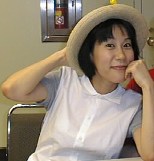

Yoko Kanno
The music for Cowboy Bebop was composed by Yoko Kanno. Kanno formed the blues and jazz band Seatbelts to perform the series’s music. According to Kanno, the music was one of the first aspects of the series to begin production, before most of the characters, story, or animation had been finalized. The genres she used for its composition were western, opera, and jazz. Watanabe noted that Kanno did not score the music exactly the way he told her to. He stated, "She gets inspired on her own, follows up on her own imagery, and comes to me saying 'this is the song we need for Cowboy Bebop,' and composes something completely on her own." Kanno herself was sometimes surprised at how pieces of her music were used in scenes, sometimes wishing it had been used elsewhere, though she also felt that none of their uses were "inappropriate". She was pleased with the working environment, finding the team very relaxed in comparison with other teams she had worked with.
The Real Folk Blues
"The Real Folk Blues" is the first ending theme for Cowboy Bebop. The song was performed by Seatbelts, featuring vocals by Mai Yamane. The song was composed and arranged by Yoko Kanno, with lyrics by Yūho Iwasato. The track appears on the series-related album Cowboy Bebop Vitaminless (カウボーイビバップ ビタミンレス, Kaubōi Bibappu Bitaminresu). The song is one of few songs in the series to be sung in Japanese.